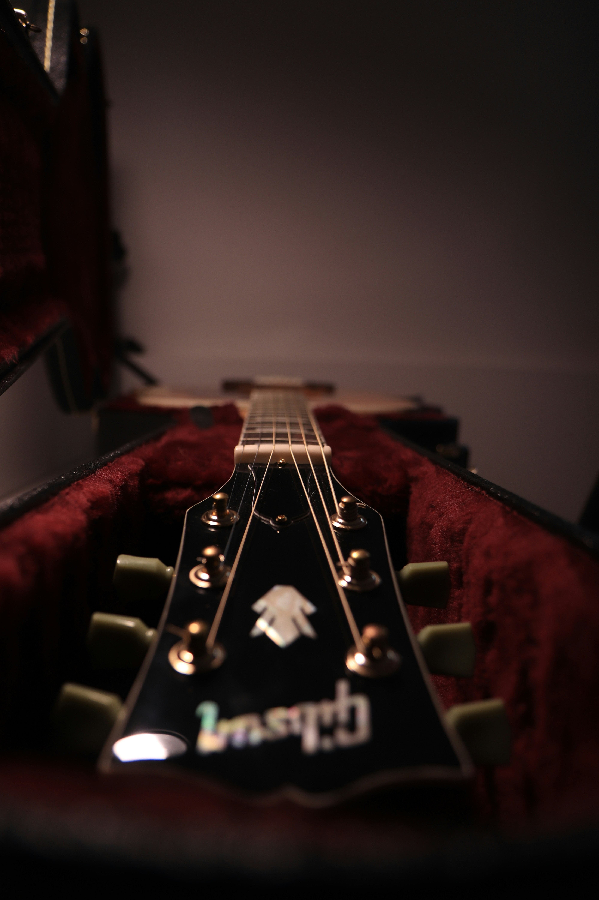
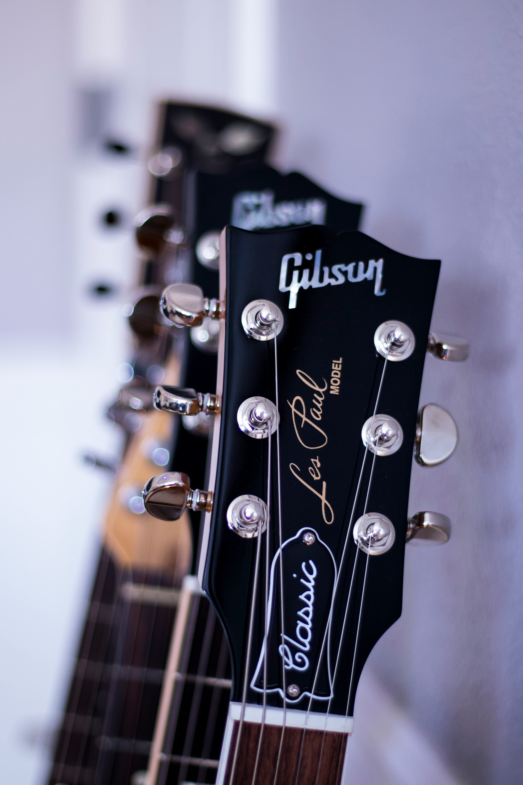

Gibson was founded in 1902, and created one of the first successful solid-body guitar-the famous "Les Paul", the creator sharing the same name. Other iconic models are the SG, and ES series. These models have broken the barrier of guitar players to where they will be recognised by those who have never played. While many see Gibson as guitar for rock music, it can do that and so much more. Many musicians will use Gibson's to play jazz, country, pop, and blues music. Gibson is currently one of the highest end guitar comanies that have a reputation for their reliable quality and history within music.  